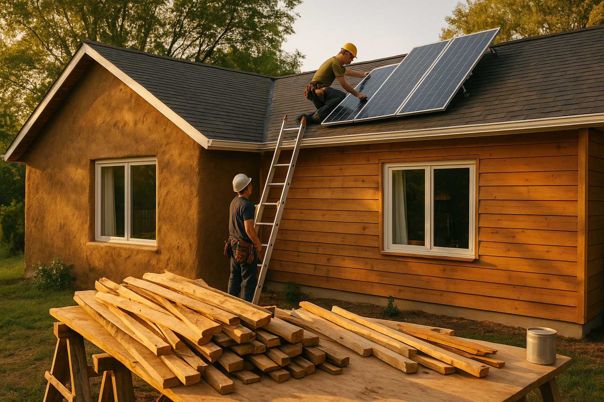
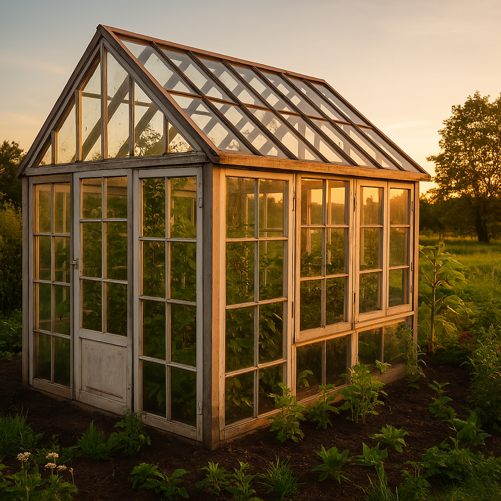

Jätkusuutlik renoveerimine:
Mida tähendab jätkusuutlikkus ehituses ja miks see oluline on?
Loe edasi
Kuidas leida soodsalt ehitusmaterjale?
Avasta parimad allikad ja nipid, kuidas ehitusmaterjalide pealt raha säästa.
Loe edasi

Uus elu vanadele asjadele
Taaskasutus ehituses – kuidas vanast teha uus, säästes loodust ja eelarvet.
Loe edasi